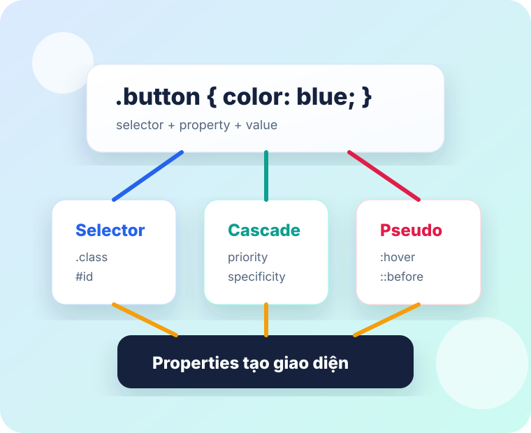

Syntax
Đọc được một rule CSS: selector, property, value, declaration.
Buổi training
CSS giúp biến HTML thô thành giao diện có bố cục, màu sắc, trạng thái và chuyển động. Bài này đi từ nền tảng nhất đến những selector và pseudo class thường gặp trong dự án thực tế.

Lộ trình
Đọc được một rule CSS: selector, property, value, declaration.
Hiểu class, id, element, quan hệ cha con và attribute selector để chọn đúng phần tử.
Nhúng CSS bằng inline, internal, external và quan sát cascade bằng lab bật/tắt rule.
Tương tác với background, border, display, flex, grid, box model, text và animation.
Style trạng thái và phần ảo như hover, focus, checked, before, after, nth-child.
Nắm viewport, fluid layout, media query và cách tránh tràn layout trên mobile.
Ôn lại kiến thức bằng 8 câu trắc nghiệm có chấm điểm và giải thích đáp án.
Ghi nhớ 15 kinh nghiệm debug CSS, tránh lỗi thường gặp và làm CSS dễ bảo trì.
CSS Syntax
property: value;./* Comment trong CSS */
selector {
property: value;
}
.card-title {
color: #0f172a;
font-size: 24px;
line-height: 1.3;
}ID & class
Class bắt đầu bằng dấu chấm .. Dùng cho nhóm phần tử có cùng vai trò hoặc cùng kiểu hiển thị.
<button class="btn primary">Lưu</button>
.btn {
padding: 12px 16px;
}
.primary {
background-color: #2563eb;
}ID bắt đầu bằng dấu thăng #. Dùng khi cần định danh một phần tử đặc biệt hoặc làm anchor.
<section id="pricing">...</section>
#pricing {
scroll-margin-top: 96px;
}.classChọn mọi phần tử có class.#idChọn phần tử có id tương ứng.elementChọn theo tên thẻ: p, button.h1, pChọn nhiều selector cùng lúc..card pChọn hậu duệ nằm bên trong..card > pChọn con trực tiếp.[disabled]Có attribute.[type="email"]Attribute có giá trị chính xác.[class~="tag"]Trong danh sách từ có từ đó.[href^="https"]Bắt đầu bằng giá trị.[href*="docs"]Có chứa chuỗi.
.card p đi vào mọi cấp bên trong .card,
còn .card > p chỉ bắt đúng con trực tiếp.
CSS How To
<p style="color: red;">
Cảnh báo
</p>Nhanh để thử, nhưng khó bảo trì và khó tái sử dụng.
<style>
p { color: red; }
</style>Hợp với demo nhỏ hoặc một trang đơn giản.
<link rel="stylesheet"
href="./styles.css">Cách nên dùng trong dự án vì dễ chia file, cache và quản lý.
Hãy tưởng tượng nhiều rule đang cùng “tranh quyền” đổi màu một button. CSS không đoán ý mình; nó so từng rule theo thứ tự ưu tiên và chọn rule thắng.
Kết quả cuối: màu hồng thắng vì rule có !important.
button { background: gray; }
Thua vì chỉ chọn theo tag, độ cụ thể thấp.
.primary { background: blue; }
Mạnh hơn tag, nhưng nếu có rule cùng class viết sau thì rule sau thắng.
.primary { background: teal; }
Cùng độ cụ thể với rule class ở trên, nhưng thắng vì nằm sau trong source order.
#saveBtn { background: orange; }
Rất cụ thể, nhưng vẫn thua inline style.
style="background: green"
Gần như thắng, trừ khi gặp !important.
.primary { background: rose !important; }
Thắng vì !important được xét trước specificity.
!important không?CSS Properties
Mỗi property thường trả lời một câu hỏi: phần tử trông như thế nào, chiếm bao nhiêu chỗ, nằm ở đâu, phản ứng ra sao khi người dùng tương tác.
background-color, background-image, background-size,
background-position, background-repeat.
border, border-top, border-bottom, border-color,
border-radius.
color đổi màu chữ. cursor đổi con trỏ khi hover.
display: flex giúp căn hàng/cột, khoảng cách, căn giữa.
font-family, font-size, font-weight, font-style.
@font-face {
font-family: "BrandFont";
src: url("./BrandFont.woff2");
}width, height, left, right, top,
bottom thường đi cùng position.
padding là khoảng cách bên trong; margin là khoảng cách bên ngoài.
Nội dung dài hơn khung sẽ bị xử lý bằng overflow: auto, hidden hoặc visible.
opacity điều chỉnh độ trong suốt.
@keyframes pulse {
from { transform: scale(1); }
to { transform: scale(1.25); }
}Properties lab
Tick checkbox, chọn option hoặc kéo slider để quyết định property
nào được apply. Khi bấm Show code, đoạn CSS trong card
sẽ cập nhật theo đúng lựa chọn hiện tại.
Dùng để thấy background-color, background-image,
background-size, border và border-color.
Before Main Side Extra After
inline nằm cùng dòng nhưng bỏ qua width/height.
block xuống dòng. inline-block nằm cùng dòng
và vẫn nhận width/height.
Nếu bỏ tick display: flex, các property như
align-items, justify-content, gap
không còn tạo bố cục flex.
flex giỏi xếp theo một trục và tự wrap theo width item.
grid giữ hàng/cột rõ ràng bằng grid-template-columns.
Parent dùng position: relative. Badge chỉ neo bằng
top/right/bottom/left khi được bật absolute.
box-sizing formula
Wrapper màu cam có width, height,
padding; content màu trắng có kích thước riêng để
so sánh padding và box-sizing ảnh hưởng tới kích
thước khung bao quanh con ra sao.
Khi nội dung dài hơn chiều cao khung, overflow quyết định phần dư sẽ hiện ra, bị cắt đi hay có thanh cuộn. Opacity làm toàn bộ phần tử trong suốt hơn, bao gồm cả chữ và nền. Hãy thử đổi overflow giữa hidden, auto, scroll và visible.
Dùng khi nội dung vượt khung hoặc cần làm phần tử mờ đi.
Đổi font-size, font-weight, line-height và float để thấy đoạn văn thay đổi nhịp đọc.
Bật animation để viên bi đi từ from sang to.
Đổi duration, delay, easing, direction và số lần chạy để thấy từng phần của shorthand.
Pseudo class / element
Pseudo class chọn phần tử theo trạng thái hoặc vị trí. Pseudo element tạo một phần ảo để style mà không cần thêm HTML thật.
:hover xảy ra khi con trỏ nằm trên phần tử.
:active chỉ tồn tại trong lúc đang nhấn giữ.
:focus xảy ra khi phần tử đang nhận thao tác bàn phím.
Checkbox đổi màu bằng :checked, button xám bằng
:disabled, ô trống được highlight bằng :empty.
Pseudo element thêm phần trang trí mà không cần thêm tag HTML.
::before và ::after thường dùng cho icon,
badge, quote mark, overlay hoặc decoration.
CSS có thể style chữ cái đầu tiên bằng ::first-letter và dùng nó để tạo điểm nhấn cho đoạn văn.
Dùng ::first-letter cho drop cap hoặc phần mở đầu có tính editorial.
Đổi selector để so sánh nhóm *-child theo thứ tự con,
nhóm *-of-type theo loại tag, và :not(selector).
Responsive CSS
Responsive không chỉ là thêm vài breakpoint. Mục tiêu là để layout, chữ, ảnh và khoảng cách co giãn hợp lý từ mobile đến desktop.
Luôn có thẻ viewport để trình duyệt mobile đọc đúng chiều rộng thiết bị, thay vì render trang như một desktop thu nhỏ.
<meta name="viewport"
content="width=device-width, initial-scale=1">
Ưu tiên %, fr, minmax(),
max-width và clamp() để khối tự co giãn
trước khi cần breakpoint.
.container {
width: min(100% - 32px, 1120px);
}
Dùng @media khi layout cần đổi cấu trúc rõ ràng, ví dụ
từ 3 cột desktop xuống 1 cột trên mobile.
@media (max-width: 680px) {
.grid {
grid-template-columns: 1fr;
}
}
Ảnh nên co theo container, text cần được phép xuống dòng. Khi item
trong flex/grid bị tràn, kiểm tra min-width: 0.
img {
max-width: 100%;
height: auto;
}Bắt đầu bằng layout linh hoạt. Sau đó thêm breakpoint ở nơi giao diện thật sự gãy: chữ bị chật, card quá hẹp, bảng tràn hoặc thao tác khó bấm.
Trắc nghiệm
Chọn một đáp án cho mỗi câu. Kết quả sẽ hiện ngay để cả lớp có thể thảo luận lại phần kiến thức liên quan.
Tips thực tế
Một vài thói quen nhỏ giúp CSS dễ bảo trì hơn, debug nhanh hơn và tránh những lỗi thường gặp khi làm giao diện thật.
Dùng DevTools inspect đúng element trước khi sửa CSS. Xem tab Computed để biết giá trị cuối cùng đến từ rule nào, file nào và có bị rule khác gạch bỏ không.
Ưu tiên class cho component thay vì bám quá chặt vào tag hoặc cấu trúc cha con. Selector ngắn, có chủ đích sẽ dễ tái sử dụng và dễ override hơn.
Đặt box-sizing: border-box cho layout để padding và border nằm trong kích thước đã khai báo. Cách này giúp card, input, column ít bị phình ngoài khung.
Khi layout lệch, bật tạm outline: 1px solid red cho các khối nghi ngờ. Outline không làm đổi kích thước box nên rất tiện để debug spacing.
Dùng gap trong flex/grid thay vì đặt margin rải rác trên từng item. Khi thêm, xóa hoặc reorder item, khoảng cách vẫn ổn định hơn.
Trước khi tăng z-index, kiểm tra phần tử có position phù hợp chưa và cha có tạo stacking context không. Nhiều lỗi overlay không phải do số z-index quá nhỏ.
Nếu width hoặc height không có tác dụng, kiểm tra phần tử có đang là inline không. Đổi sang inline-block, block hoặc layout flex/grid nếu cần đặt kích thước.
Không lạm dụng !important vì nó làm cascade khó đoán và khó override về sau. Hãy thử giảm specificity, đổi thứ tự import hoặc sửa selector trước.
Luôn style trạng thái tương tác như :hover, :focus, :disabled, :active. Người dùng chuột, bàn phím và screen reader đều cần tín hiệu trạng thái rõ ràng.
Dùng biến CSS cho màu, spacing, border radius và shadow phổ biến. Khi cần đổi theme hoặc chỉnh design system, bạn sửa một nơi thay vì săn từng giá trị rải rác.
Debug responsive bằng cách kéo viewport từ rộng xuống hẹp, không chỉ test vài kích thước cố định. Lỗi thường xuất hiện ở khoảng giữa breakpoint, nơi text bắt đầu wrap.
Khi text bị tràn, kiểm tra min-width, overflow-wrap và grid/flex item. Với flex/grid, thêm min-width: 0 cho item con thường giải quyết nhiều ca khó chịu.
Đừng dùng position: absolute để làm layout chính nếu flex hoặc grid giải quyết được. Absolute phù hợp cho badge, tooltip, overlay nhỏ vì nó thoát khỏi luồng layout bình thường.
Animation nên có mục đích và thời lượng vừa phải. Với hiệu ứng lặp hoặc chuyển động mạnh, cân nhắc prefers-reduced-motion để tôn trọng người dùng nhạy cảm với chuyển động.
Khi CSS không chạy, kiểm tra lỗi rất cơ bản trước: file CSS có được load không, selector có match không, property có bị typo không. DevTools Network và tab Styles thường trả lời nhanh nhất.